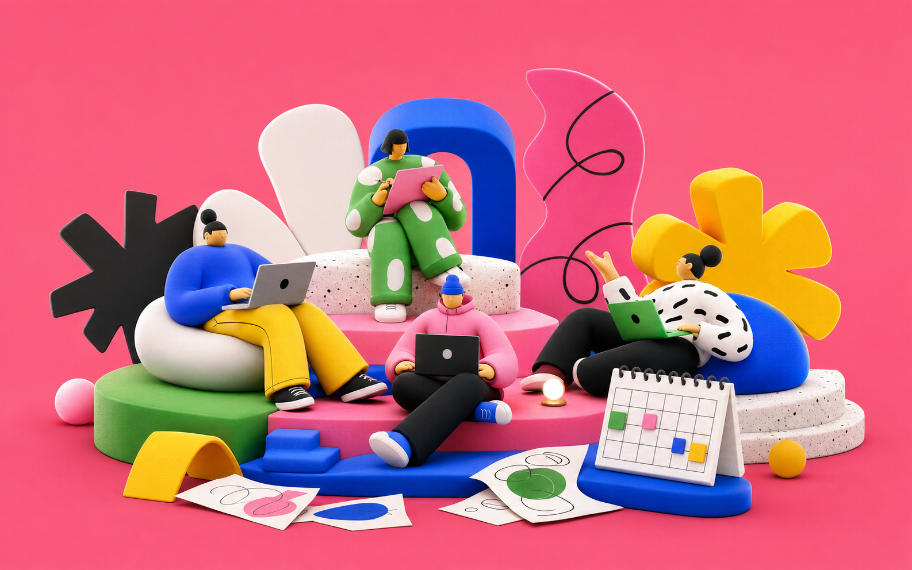
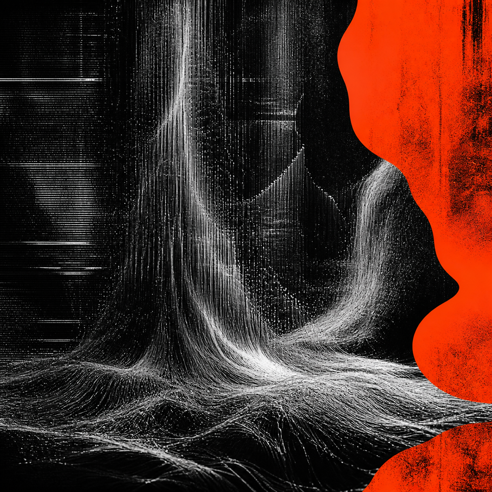

02 / remote ritual one
A skill packaged as a toy operating system.
Framer-like charm comes from specificity: chunky shapes, tiny mono notes, saturated backdrops, and instructions concrete enough for another agent to reuse.

optimizing perception. making the browser feel less like a brochure.
webgl signal / generated matter / scroll state
An open-source landing page and Codex skill for building launch pages that feel like interactive installations: shader-driven dark matter, code texture, brutal editorial collage, and toy-like ritual worlds.
white field mode
The reference trick is not decoration. It is composition pressure: giant cropped type, floating media, custom cursor, dead space that feels intentional, and a workflow anyone can fork.

02 / remote ritual one
Framer-like charm comes from specificity: chunky shapes, tiny mono notes, saturated backdrops, and instructions concrete enough for another agent to reuse.

03 / active state
The section moves horizontally while the viewport stays fixed, echoing the way reference sites turn scroll into a scene controller.
04 / handcrafted exit
Magnetic controls, shader response, live readouts, and generated assets make the landing page feel operated instead of viewed. Fork it, remix it, and star the skill repo.
05 / launch console
WebGL first. Motion as state. Generated assets as focal material. Typography that decides the composition. Scroll as an editing timeline. A skill repo that turns the research into repeatable agent instructions.
fragment shader core, pointer distortion, scroll-driven palette
reference analysis, effect recipes, visual QA rules, and reusable workflow
open the skill repo, give it a star, and use it as a launch-page starting point